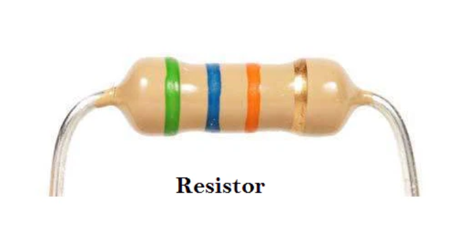
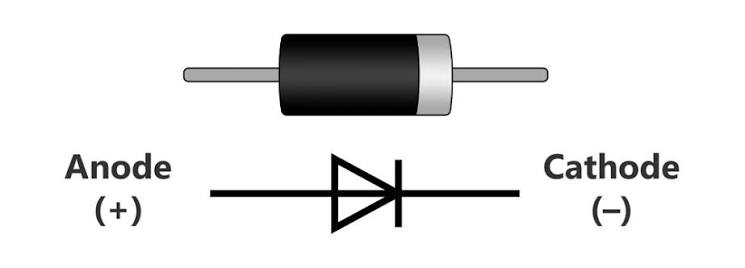
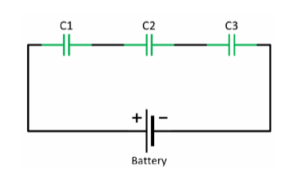
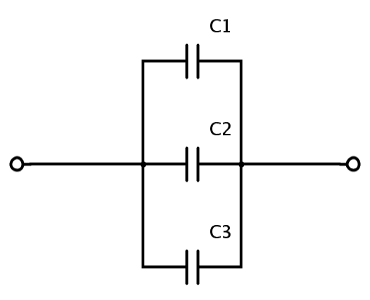

Resistance is measured in Ohms (Ω).
Ohm
1000 Ω
1,000,000 Ω
Resistors are generally classified into two main categories: Fixed Resistors and Variable Resistors.
A fixed resistor has a resistance value that remains constant and cannot be changed after manufacturing.
A variable resistor allows its resistance value to be adjusted according to circuit requirements.
| Feature | Fixed Resistor | Variable Resistor |
|---|---|---|
| Resistance Value | Constant | Adjustable |
| User Control | Not Adjustable | Can Be Adjusted |
| Applications | General Electronic Circuits | Volume Controls, Brightness Controls, Calibration |
| Examples | Carbon Film, Metal Film, Wire Wound | Potentiometer, Rheostat, Trimmer |
Suppose a battery is connected incorrectly to an electronic circuit.
When the positive terminal of a battery is connected to the anode and the negative terminal to the cathode:
A capacitor stores electric charge between two conductive plates separated by an insulating material called a dielectric.
| Water System | Electrical System |
|---|---|
| Water | Electric Charge |
| Tank | Capacitor |
| Pipe | Wire |
Unlike a resistor, a capacitor does not directly control voltage or current. Its primary function is to store electrical charge and release it when needed.
The behavior of a capacitor is described by the following relationship:
Where:
✔ Capacitor Likes: Constant Voltage
❌ Capacitor Dislikes: Sudden Voltage Changes
Think of a capacitor like a water tank connected to a pipe. The tank can store water and release it when needed, but it resists sudden changes in water pressure.
Similarly, a capacitor stores electrical energy and resists sudden changes in voltage.
Suppose a capacitor is initially uncharged (empty). When a battery is suddenly connected, the capacitor begins to charge.
The capacitor behaves almost like a normal wire for a very brief moment.
As charge accumulates on the capacitor plates:
Eventually, the capacitor becomes fully charged.
Capacitor Voltage = Battery Voltage
Current = 0 A
At this point, no more current flows through the circuit.
Capacitors are widely used in electronic circuits because they can store electrical energy, smooth voltage fluctuations, create timing delays, and provide temporary backup power.
A capacitor can store electrical energy and release it when needed.
The capacitor slowly stores energy from the battery and then releases it instantly to produce a bright flash of light.
Capacitors help remove unwanted voltage fluctuations and electrical noise from power supplies.
They smooth the output voltage and provide a more stable power source.
| Application | Purpose | Example |
|---|---|---|
| Energy Storage | Stores electrical energy | Camera Flash |
| Filtering | Removes voltage fluctuations | Phone Chargers |
| Timing Circuits | Creates delays | LED Blinkers |
| Backup Power | Provides temporary power | Computers, Memory Circuits |
It resists sudden increases or decreases in current.
Standard Inductor Symbol
The inductor symbol consists of several curved loops that represent a coil of wire. The coil stores energy in the form of a magnetic field whenever current flows through it.
Inductors behave opposite to capacitors when connected together. The way inductance changes depends on whether the inductors are connected in series or in parallel.
When inductors are connected end-to-end in a single current path, they are said to be connected in series.
The magnetic effects of each coil add together, increasing the total inductance of the circuit.
For two inductors:
Two inductors are connected in parallel:
The equivalent inductance is 2 H, which is smaller than both individual inductors.
The relationship between voltage, current, and resistance is described by Ohm's Law.
Voltage = Current × Resistance
Voltage
Measured in Volts (V)Current
Measured in Amperes (A)Resistance
Measured in Ohms (Ω)A resistor is a passive electronic component that opposes the flow of electric current in a circuit. It is used to control current, divide voltage, and protect electronic components from excessive current.

Imagine water flowing through a pipe. When the pipe is wide, water flows freely. If a narrow section is introduced, water flow decreases because it faces more resistance.
Similarly, in an electrical circuit, wires act like pipes and electrons act like flowing water. A resistor behaves like a narrow pipe section, restricting the flow of electrons.
A resistor always creates a voltage drop across its terminals whenever current flows through it.
Electrons collide with atoms in the resistor material, causing energy loss as heat.
The output voltage becomes lower than the input voltage.
Current remains the same throughout a series resistor.
| Water System | Electrical System |
|---|---|
| Water | Electrons |
| Pipe | Wire |
| Water Flow | Electric Current |
| Narrow Pipe | Resistor |
| Pipe Pressure | Voltage |
In a series circuit, components are connected end-to-end, forming a single continuous loop. There is only one path for electric current to travel from the positive terminal of the power source to the negative terminal.
Imagine a single road with several speed bumps placed one after another. Every car must pass through all of them, slowing the overall flow. Similarly, each component adds resistance to the circuit and affects the flow of current.
Current remains the same throughout the entire circuit, voltage is divided among the connected components, and the total resistance increases as more resistors are added in series.
In a parallel circuit, components are connected side-by-side across the same two nodes of the circuit. This arrangement creates multiple independent paths for electric current to travel.
Since there are several paths available, current can flow through different branches at the same time.
Every branch is connected directly across the power supply, so each branch receives the same voltage.
The total current from the source divides among the available branches and combines again when returning to the source.
Adding more parallel branches provides additional paths for current flow, reducing the overall resistance of the circuit.
Imagine a road that splits into several lanes.
In the same way, a parallel circuit provides multiple paths for current, allowing more current to flow through the circuit.
| Property | Parallel Circuit |
|---|---|
| Current Path | Multiple Paths |
| Voltage | Same Across All Branches |
| Current | Splits Between Branches |
| Total Current | I total = I₁ + I₂ + I₃ |
| Equivalent Resistance | Decreases |
| Real-Life Analogy | Multi-Lane Road |
| Electrical Property | Series Connection | Parallel Connection |
|---|---|---|
| Current (I) | Same through all components. | Splits into individual branches. |
| Voltage (V) | Divides across components. | Same across all branches. |
| Equivalent Resistance (R) | Increases (R₁ + R₂ + R₃ ...) |
Decreases (Additional current paths) |
| Component Independence | If one component breaks, the entire circuit opens and stops working. | If one branch breaks, the other branches continue to operate independently. |
Fixed resistors provide a constant resistance value, while variable resistors allow the resistance to be adjusted to control current or voltage in a circuit.
A diode is an electronic component that allows electric current to flow in only one direction and blocks it in the opposite direction.
Imagine a water pipe with a one-way valve.
A diode behaves exactly like this one-way valve for electricity.

The diode is like a gatekeeper that says:
Diodes protect electronic circuits when batteries or power supplies are connected incorrectly. They block reverse current and prevent damage to sensitive components.
Diodes are widely used in rectifier circuits to convert Alternating Current (AC) into Direct Current (DC), which is required by most electronic devices.
An LED is a special type of diode that emits light when electric current flows through it. LEDs are used in displays, indicators, lighting systems, and electronic devices.
Solar cells operate using semiconductor junctions that work on diode principles. They convert sunlight into electrical energy and are used in renewable energy systems.
A capacitor is an electronic component that stores electrical energy temporarily and releases it when needed.
Think of it as a small rechargeable battery that charges and discharges very quickly.
Imagine a water pipe carrying water. Now place a small tank connected to the pipe.
A capacitor behaves in a similar way inside an electrical circuit.
Standard symbol of a capacitor used in electrical and electronic circuit diagrams.
A capacitor stores electrical energy by creating an electric field between two conductive plates separated by an insulating material.
Voltage Applied → Charge Separation → Electric Field Formation → Energy Stored
The capacitor does not lose its stored energy immediately. Instead, the stored charge can flow back into the circuit, supplying electrical energy for a short period of time.

In a series connection, the same charge flows through every capacitor, but the applied voltage is shared between them.
Battery Voltage: 9V
C₁ = C₂ = C₃
Since the capacitors are identical and connected in series, the voltage is divided equally.
Voltage across each capacitor = 3V
Capacitors connected in series produce a smaller equivalent capacitance.
1 / C eq = 1 / C 1 + 1 / C 2 + 1 / C 3
When capacitors are connected in series, charge must pass through multiple storage stages before it can be stored.

In a parallel connection, all capacitors are connected across the same voltage source.
In a parallel connection, capacitances add directly.
The equivalent capacitance is always larger than any individual capacitor in the circuit.
Connecting capacitors in parallel effectively increases the total plate area available for storing charge.
| Property | Parallel Connection |
|---|---|
| Voltage | Same across all capacitors |
| Charge | Adds together |
| Capacitance | Increases |
| Formula | Ceq = C1 + C2 |
A dielectric is the insulating material placed between the two plates of a capacitor.
It prevents direct electrical contact between the plates while allowing the capacitor to store electrical energy.
Without a dielectric, the capacitor plates could touch each other and create a short circuit.
Plate +++++
Plate -----
The dielectric acts as a barrier between the plates and makes energy storage possible.
| Property | Dielectric |
|---|---|
| Purpose | Separates capacitor plates |
| Material Types | Air, Paper, Ceramic, Plastic, Mica |
| Main Benefit | Increases charge storage capacity |
| Additional Benefit | Prevents short circuits |
Capacitors can control the charging and discharging time in electronic circuits, creating predictable delays.
The charging and discharging process determines how quickly the LED turns ON and OFF.
Capacitors can provide power for a short period when the main power source drops or is interrupted.
This helps prevent data loss and allows circuits to continue operating briefly during power interruptions.
What is an inductor?(The Electron Flywheel)
An inductor is a passive electrical component that stores energy in a magnetic field when electric current flows through it.
It is typically made by winding a wire into a coil around an air core, iron core, or ferrite core.
The main property of an inductor is that it resists sudden changes in current flowing through it.
Imagine a bicycle wheel spinning.
The wheel naturally resists changes in its motion.
Just as a wheel resists sudden changes in motion, an inductor resists sudden changes in current.
An inductor does not oppose current itself. Instead, it opposes changes in current.
Each inductor creates its own magnetic field when current flows through it.
Suppose two inductors are connected in series:
Therefore, the equivalent inductance of the circuit is 8 H.
| Connection Type | Result |
|---|---|
| Inductors in Series | Inductance Increases |
| Equivalent Formula | L eq = L₁ + L₂ + L₃ + ... |
| Main Effect | Magnetic fields add together |
| Final Value | L eq is greater than each individual inductor |
When inductors are connected in series, their coil turns effectively add together, creating a longer magnetic path.
Inductance is proportional to the square of the number of turns in the coil.
This means that even a small increase in the number of turns can produce a significant increase in inductance.
Imagine connecting multiple coils end-to-end.
The combined structure behaves like one longer solenoid. Since the magnetic field extends through a larger coil structure, the inductance increases.
When inductors are connected in parallel, the equivalent inductance decreases.
Current can flow through multiple branches, reducing the overall opposition to changes in current.
In a parallel inductor circuit, the total current splits among the available branches.
For two inductors:
Series and Parallel Connection Characteristics
| Configuration | Capacitors | Inductors |
|---|---|---|
| Series |
Smaller
1/C eq = 1/C 1 + 1/C 2 |
Larger
L eq = L 1 + L 2 |
| Parallel |
Larger
C eq = C 1 + C 2 |
Smaller
1/L eq = 1/L 1 + 1/L 2 |
| Why Series Changes? | Effective plate separation increases. | Coil turns increase (longer coil). |
| Why Parallel Changes? | More plate area available. | Current divides into multiple branches (less current per branch). |